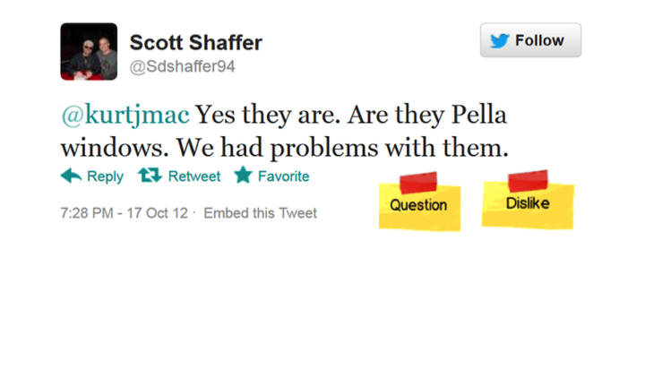
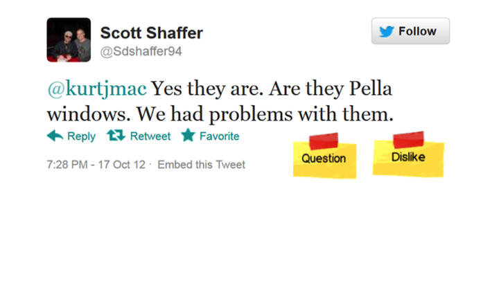

Improve your product and find what features are desired


 

Mission
Cruxly provides analytics technology for intent and event detection, that is highly valuable for engagements broadly in customer and partner engagements in marketing, product management, and support
Patented technology
The Cruxly team collectively has more than 50 years of NLP experience, and is led by Aloke Guha who holds 6 patents (of 25 issued) related to machine learning and data mining.